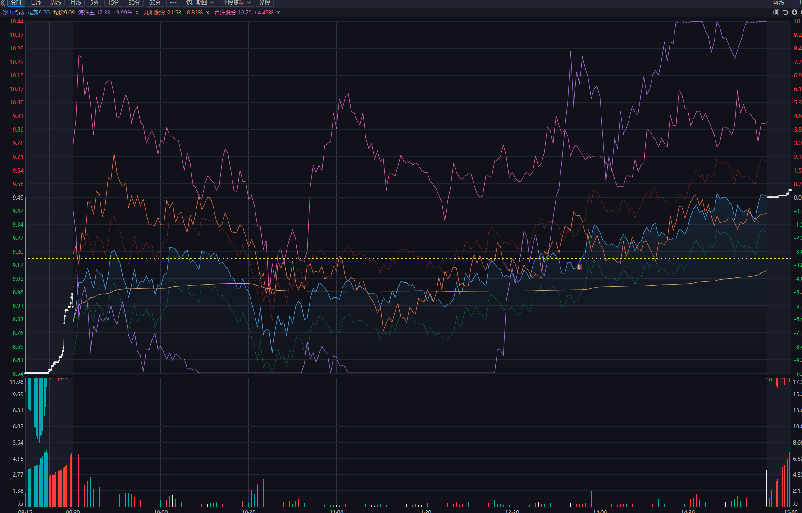

数据口径与本周结论
先版结论：本人口述认为本周没有特别大的失控错误，主要问题集中在九阳抱团判断、万丰新题材切换、吉大龙头试错、星光切换与离场。最需要改进的是题材支撑走弱后仍延长持有。
截图是委托历史，不是含手续费的成交回报。只纳入“已成”的实际成交数量和均价；撤单、废单和未成交委托已剔除。图中B/S仅按委托时间近似定位，不能冒充精确成交点。
跨周成本承接10/14超声电子及10/15九阳股份原买入；万丰400股虽然是夜间委托，但状态为已成，应计入闭环。其日期存在歧义，暂归10/19，不画精确分钟点。金额不含本周费用；收益率不采用每日直接相加。
本人反思、事后推演与成交事实分栏呈现。监管、盘中联动与“本可赚到”的表述均不直接计入实际收益。原截图中的合同号、委托编号等不展示。
账户收益与仓位
以下是未扣本周费用的参考推算，不是券商日表：以上期期末现金5,039.86元为起点，逐日加卖出额、减买入额，再加剩余持仓×当日收盘价。假设无出入金、其他持仓或漏单；本周费用补齐后各项需重算。10/19的归属还受万丰夜间委托日期影响。
期初权益参考11,123.86
期末权益参考10,487.86
平均日末仓位参考29.98%
期末现金参考7,381.86
平均仓位是五个交易日日末仓位的算术平均，不是周五仓位，也不是日内时间加权仓位。最高参考日变动：周四 +8.00；最低：周一 -299.00。正式最赚/最亏日仍待账户日表确认。
| 日期 | 星期 | 当日操作标的 | 参考日盈亏
费用前 | 参考涨跌率
费用前 | 日末仓位
参考 | 期末权益
费用前 |
|---|
| 2026-10-19 | 周一 | 买入 万丰奥威 002085 400股＊ 卖出 九阳股份 002242 200股；超声电子 000823 100股 | -299.00 | -2.69% | 40.28% | 10,824.86 |
| 2026-10-20 | 周二 | 买入 万丰奥威 002085 200股；吉大正元 003029 200股 卖出 万丰奥威 002085 400股 | -104.00 | -0.96% | 69.73% | 10,720.86 |
| 2026-10-21 | 周三 | 卖出 万丰奥威 002085 200股；吉大正元 003029 200股 | -228.00 | -2.13% | 0.00% | 10,492.86 |
| 2026-10-22 | 周四 | 买入 星光股份 002076 400股 | +8.00 | +0.08% | 10.28% | 10,500.86 |
| 2026-10-23 | 周五 | 买入 冰山冷热 000530 100股；九阳股份 002242 100股 卖出 星光股份 002076 400股 | -13.00 | -0.12% | 29.62% | 10,487.86 |
＊万丰400股归属暂定。周三日末空仓不等于当天收益为零。日收益包含持仓市值变化，闭环毛盈亏则包含跨周买入成本，两者不能混用。
闭环贡献与期末持仓
| 标的 | 区间 / 数量 | 买入金额 | 卖出金额 | 闭环毛盈亏 | 毛收益率 |
|---|
| 吉大正元 003029 | 10/20–10/21
200股 | 5,316.00 | 5,132.00 | -184.00 | -3.46% |
| 万丰奥威 002085 | 10/19–10/21（首笔日期待核）
600股 | 6,464.00 | 6,320.00 | -144.00 | -2.23% |
| 九阳股份 002242 | 10/15–10/19（跨周）
200股 | 3,459.00 | 3,334.00 | -125.00 | -3.61% |
| 星光股份 002076 | 10/22–10/23
400股 | 1,072.00 | 988.00 | -84.00 | -7.84% |
| 超声电子 000823 | 10/14–10/19（跨周）
100股 | 2,455.00 | 2,447.00 | -8.00 | -0.33% |
五组闭环合计毛亏545.00元。九阳与超声包含上周买入，因此不是本周账户损益；收益率按整组卖出额减买入额，再除以买入额计算，非年化、非单笔价格极值。
| 期末持有（交割结转） | 数量 | 本周买入额 | 10/23收盘 | 持仓市值 | 浮盈参考（未扣费用） |
|---|
| 九阳股份 002242 | 100股 | 2,116.00 | 21.53 | 2,153.00 | +37.00 |
| 冰山冷热 000530 | 100股 | 911.00 | 9.53 | 953.00 | +42.00 |
持仓市值合计3,106.00元，现金参考7,381.86元，权益参考10,487.86元；两只新仓浮盈参考合计79.00元。待持仓截图与费用确认后，才转为正式账户数值。
本周持有/闭环票：赚钱与亏损主因
002242 · 抱团判断与分时执行九阳股份
结果：前一轮毛亏125元；周五重买100股，期末浮盈参考37元。错失后续上涨不计为实际亏损。
操作与情绪：本人认为择日思路有准备，但没有理解四板后高位放量抗跌、题材主升转轮动的抱团延续。剧烈下杀触发条件单后，未能在承接和修复重新出现时及时重新评估。
下一步：止损触发与之后重新转强是两个决策。不能因为后来上涨就否定当时风控，也不能因卖出后不甘而追买；是否重新参与应重新核对题材、承接与风险预算。
002085 · 新题材切换试错万丰奥威
结果：600股闭环毛亏144元；包含此前漏计的已成400股。
操作与情绪：本人将低空经济切换的持续性预期抬得偏高，后续反思认为单一消息或噱头不等于产业持续催化；并提到误操作买入。截图只能证明成交，不能独立确认哪笔属于误按。
下一步：切换前写清催化、持续性和失效条件；下单再次核对方向与数量。正常小仓试错失败和操作失误分开记录。
003029 · 龙头试错与浮盈回吐吉大正元
结果：200股闭环毛亏184元。本人口述曾有约5%浮盈，尚无盘中账户记录核验。
操作与情绪：本人当时重视唯一四板、多概念和量能，却忽略关联题材后排转弱、低位首板助攻不足。冲高后仍延长持有，把预期留得过高。
下一步：多概念不自动等于多路资金支撑。核心冲高时同步看后排、首板、中位与容量；题材支撑走弱时执行事先设定的退出计划。
002076 · 切换错误与离场迟缓星光股份
结果：400股闭环毛亏84元，毛收益率-7.84%。
操作与情绪：本人归因于切换判断不对，形势转差后仍抱持等待；低价、低位并不能替代失效判断。
下一步：试错失效就处理，不以低位为继续格局的理由；区分正常试错成本与拖延扩大的损失。
000823 · 跨周持仓退出超声电子
结果：100股闭环毛亏8元；10/14原始买入额2,455元已核对。
操作与情绪：本次没有补充超声电子独立操作动机，不从成交倒推出情绪或交易理由。
下一步：补充当时卖出依据后再归因；当前只记录事实。
000530 · 期末新开抱团观察仓冰山冷热
结果：周五买100股，成交额911元；收盘9.53元，浮盈参考42元，未扣买入费用。
操作与情绪：本人把它列为九阳之后的抱团观察对象，强调人气、题材轮动与高位承接；这属于模式学习，尚不能由本次未平仓交易证明模式有效。
下一步：开放仓位不计入已实现收益。继续观察轮动是否延续，以及核心与跟随标的的辨识度差异。
二次反思：从单票格局到全局确认
以下整合本线程本周分段口述、图例与最后补充的知识点。保留认知变化，不把事后上涨、预计高度或模式假设写成当时已知事实。
本周自评：本人认为整体亏损尚可控、没有反复犯极端大错，主要损失与遗憾集中在九阳抱团误判、吉大退出偏慢，以及万丰和星光切换试错。学习重点不是用后续走势惩罚每次止损，而是减少无条件格局，补齐题材梯队与分时承接判断；没有符合模式的机会时保留空仓。
1. 先分清短线赚钱方式，再选交易模式
本人将短线投机区分为题材连板与高标抱团趋势。低位新题材未形成持续性时，高辨识度标的可能被反复选择；但两条线可以并存，不能用“当前抱团”一概排除仍在发酵的题材连板。
先判天时，再判题材与个股。指数下行阶段的高位穿越、低位试错，与指数和容量共振后的右侧行情不是同一套交易条件。机器人两日强度、后续分化回流是本人的观察案例，不代表已证明其必然持续8、12或18天。
2. 抱团的支撑：题材进入轮动，而非已经结束
本周最重要的新认识：题材首轮主升结束后，如果仍反复回流、持续出现低位涨停，原核心在分歧中扛住，才具备转抱团趋势的观察基础。消费、传媒/AI应用、医药等是本人列举的样本，不是永远有效的板块标签。
本人提出的观察口径是：题材不连续三个交易日从记录中消失，回流时出现约三个及以上涨停。这个阈值先记作待回测假设，不写成已经验证的胜率规则。
多概念只有在同一周期实际发酵才有意义。九阳消费转弱时，能否获得其他活跃概念助力，要看真实梯队反馈，不能仅用概念列表支持继续持仓。
3. 四板以后，分清趋势抱团与题材二波
本人归纳的样本特征：先有四板及以上连板、高人气；断板前后连续放量却没有持续强负反馈；高位震荡或急跌后收复，低点逐步抬高。低价、小市值和防御属性只是辅助观察，不能单独作为入场条件。
国芳集团、九阳股份、百洋股份、冰山冷热被用于比较“连板后直接转趋势”与“整理后突破”。题材重新主升的二波，与原题材进入轮动后的高标抱团，应分开建档。不能只凭最终上涨倒推当时就能确认穿越。
本人口述将抱团试错单票两至三成作为研究中的仓位尺度，题材二波另按原模式管理；本页记录这一想法，不视作经过回测的最优仓位，更不认为穿越失败概率低。
补充对照：一鸣食品的突破，与九阳的轮动抱团
一鸣食品的先手观察：按本人回顾，板块尚未持续顶出低位首板时，一鸣已在高位放量震荡；板块重新回流时，它率先响应，之后继续跟随。本人希望抓的是已有辨识度核心在整理后首次突破的节点，而不是等后续连续加速后再追。所谓“第一个板”，在此指这段整理后突破的首次涨停，不是任意个股的首板。
本人将随后消费持续回流、核心持续超预期，理解为持有预期得以延续的条件；“突破进去之后拿着”记录的是这类条件下的持有思路，不覆盖本周已经明确的题材或个股失效退出。后续回流属于后来出现的信息，不能倒推首次突破当天必然成功。
| 比较维度 | 一鸣食品 / 国芳集团 / 金健米业 | 九阳股份 |
|---|
| 本人暂定分类 | 更倾向按龙头二波理解：前期连板，整理或分歧后再突破，并以涨停、连板形式继续推进。 | 更倾向按轮动题材中的市场情绪抱团理解：高辨识度核心在题材强弱交替中维持承接。 |
| 题材节奏 | 本人认为对应阶段题材强度较持续；放到更长时间尺度，也可能是“强一段—弱一段—再强一段”的大周期轮动。 | 本人认为消费在较短周期也反复表现为“弱弱强、强弱弱强”，未形成同等持续的整体强度。 |
| 关注的参与点 | 辨识度已形成、题材回流时，观察整理后的首次突破及后续回流能否延续。 | 侧重回流前的先手、均价线或零轴附近承接，以及修复后的兑现。 |
| 分类边界 | 走涨停或连板是表现形式，不单凭板型就证明题材开启二波。 | 高位震荡与多概念是观察特征，不单凭形态就证明能够穿越。 |
本次认知修正：本人不再把上述样本简单归为同一种“连板转趋势”。需要分开看题材所处阶段、轮动的时间尺度，以及个股通过连板还是震荡推进；题材二波与轮动抱团的边界仍在推敲，不在本次直接改写战法分类。同一只股票在不同阶段，也不能只用一个固定标签解释。
关于“不看量能关系”的原话：本人强调，进入这类高辨识度抱团后的重点，是板块是否轮动回流、强度是否够、是否全面退潮；高位成交量大本身，不应机械视作连板模式中的退出信号。整理边界：这里暂归纳为“不机械套用原连板量能模板”，并非完全忽略量价和承接。放量后扛住与放量后失守不同，亦不能由高成交量直接证明资金不怕风险。
来源：本人本次补充的一鸣食品等历史案例对照，未提供对应起止日期，本段不补造行情年表、买卖点或收益。口述中的“一米食品、国防/国方集团、金建米业”按上下文统一为一鸣食品、国芳集团、金健米业。这些是历史学习样本，不新增本周实际成交。
4. 连续两天强题材：相对排名与绝对强度都看
连续两天进入题材强度前二、前三，无论强→更强还是更强→强，都值得列入重点观察。但弱市中的相对第一不等于足够强，仍要看绝对强度、持续催化与天时。
按本人回顾，机器人10/19强、10/20更强、10/21分化、10/22回流、10/23进一步回流。此处保留本人阶段判断；公开10/21日记同时提示混沌偏弱、三只四板并列，大业当时不等于已经完成唯一性确认。
补涨先确认阶段和地位，再看板数与承接。百洋、海洋王、慈文传媒是本人想补做的案例；三板是重点观察位，四板需结合剩余空间。前龙高度的一半只作为经验预期，不能当补涨必到目标。慈文案例口述日期有冲突，不强行写成确定年表。
5. 情绪锚、题材梯队、容量和指数要一起看
情绪锚包括新华传媒、九阳股份、海洋王，以及机器人方向的大业股份。它们的负反馈与修复可能影响其他高标的风险偏好；这是本人对盘面关系的解释，不是已验证的单一因果。
本人回顾大业低开时，不只看自身监管与前日强弱，还看新华、九阳是否继续下杀或在零轴附近稳住。机器人则同时观察情绪一字、低位首板补充、中位核心反馈及容量承接。个别非核心后排掉队，与前排辨识度标的跌停不是同一级别风险。
兆威机电回封、容量中军震荡向上、凡拓数创在异动压力下仍有承接，被本人视为愿意继续进攻的观察信号；午后指数企稳放量、题材和情绪锚同步修复，则是更晚出现的确认。不能用午后结果证明早盘必然安全。
海洋王从跌停附近回拉被本人视为极端情绪修复样本，但脱离板块、监管空间仍需看。具体分钟时点、是否地天板和监管公告尚未逐项核验；这些观察票不写入本周实际成交。
本人口述的两个候选观察点为早段低吸/承接（“低1C”原词待确认），以及站回分时均线和零轴后的修复。候选观察点不等于无条件买点；出现时间、失败条件与仓位必须另行明确。
补充案例：先稳总龙，再扩散补涨，反向助攻核心
本人观察的修复顺序：先让抱团情绪总龙稳住，回到自身分时均价线之上并形成承接；随后修复向情绪补涨标的扩散，补涨走强再反过来改善核心的情绪环境。不是把所有股票看成同步拉升，而是观察谁先稳、谁随后跟进、跟进后是否真的形成助攻。
总龙与补涨的负反馈权重不同：本人强调“总龙一定不能跌停”，指的是这套抱团修复判断需要核心不持续失守作为前提；并不是说总龙事实上不会跌停。海洋王这类后续情绪补涨即使触及跌停，也可能在核心稳定、情绪恢复后被拉起。但“可以跌停”不等于跌停安全，更不等于必然能捞回。
本人对先后顺序的解释：总龙所处位置更高，可能面对较重的兑现抛压和上涨空间约束；部分补涨的空间约束相对较小，因而先稳核心、再拉补涨、最后形成相互助攻，是本次观察到的一种路径。抛压与资金意图不能由叠加分时图直接证明；监管压力也应逐票核验，不能因为是补涨就默认更低。
加入看盘记录：分别记录核心止跌、站回自身均价线、补涨启动、核心再次转强的时间，以及相反案例。如果核心继续转弱，或补涨拉起后没有形成持续助攻，就不能继续沿用“先稳总龙”的解释。

来源：本人本次补充截图，未显示交易日期，按本周学习案例保存。图中可比较价格轨迹先后，但所示均价线不能替代每只叠加标的各自的均价线；“总龙站回自身均价线”仍需对应个股分时核验。此图不新增成交或收益记录。连板龙转抱团趋势龙：看承接，也看超预期
本人进一步明确的路径：题材发酵与主升形成连板龙；当原题材从主升转入轮动，而核心仍保有市场辨识度和领涨作用时，它可能从题材连板标的转为市场情绪抱团趋势标的。此时不能再只用“今天有没有涨停、有没有晋级”评估强弱，重点转向分歧中的承接、负反馈能否收住，以及修复是否超出事前预期。
承接看什么：是否持续跌停或出现连续强负反馈；跌破自身分时均价线后停留多久、能否收回并站稳；水下放量后是继续下沉，还是回到均价线、零轴之上；后排是否有补涨顶出，核心能否带动而不仅是孤立上涨。本人口述认为，有时一两个有辨识度的补涨就能形成助攻，这是本轮案例的观察，不是固定数量就足以维持板块的规则。
九阳股份：本人回顾的是反复承接，而非每天封板。断板、震荡及异动约束阶段，重点观察它是否长时间失守自身分时均价线，还是反复收回。这里的“均线”指分时均价线，不与五日、十日均线混用。
| 日期 / 星期 | 本人对九阳的回顾 | 观察重点（尚待逐日分时核验） |
|---|
| 10/19 周一 | 后段炸板，情绪尚未充分回暖；本人记忆中仍多在均价线附近、红盘承接。 | 炸板后有没有持续转弱，而不只是看是否封住。 |
| 10/20 周二 | 本人回顾多数时间在均价线之上。 | 站上后能否持续承接，不只看一次上穿。 |
| 10/21 周三 | 本人回顾仅短暂破线，随后维持承接并出现加速。 | 短暂失守后的收复与加速是否超出原先预期。 |
| 10/22 周四 | 本人回顾仍在均价线之上，并与冰山冷热共同走强。 | 核心与补涨的联动是否真实延续。 |
| 10/23 周五 | 情绪差时有较长失守，随后围绕均价线震荡，尾段收回。 | 区分日内承接修复与整日涨跌，不能因收回均价线就认定所有买点盈利。 |
冰山冷热：分歧中重新被承接，是本人的关键识别点。本人回顾其三板、四板阶段连续放量，之后断板仍有红盘和均价线附近承接；特别是10/20，一度深水、原以为可能跟不上九阳的情绪，最终又拉回均价线与红盘之上，被本人视为第二次显著超预期。10/22与九阳共同走强、10/23表现偏弱，也一并保留，而不只挑强势日。
据此，本人把冰山视为九阳、百洋这条情绪链中的补涨抱团样本：识别重点是水下未持续崩溃、放量后重新收复，并延续关注度，而不是看到四板就直接认定以后必然走趋势。具体三板、四板与断板日的量能，以及10/20收复时点，仍需对应行情逐项核验。
放量与超预期分开判断：本人将连续换手理解为资金更替、热度维持；但成交量本身不能证明资金在维护趋势，也可能伴随派发或承接衰退。应同时看价格能否收回、低点是否继续下移、修复能否维持。“超预期”先写清原先预期，再比较实际表现，避免仅因后来上涨就补写理由。
本段记录本人模式学习，不是盈利保证。“承接强”不等于“不会亏钱”；加速后能否延续仍需下一阶段反馈。此次仅补充反思，不改变成交、账户估值与收益统计。
6. 抱团为什么可能瓦解
本人认为，高低切迟迟没有形成更有持续性的方向，会令资金继续聚焦高标；当更大容量、赚钱效应更清晰的新方向出现时，旧抱团可能失去接力。科技趋势与旧投机之间的分流，是本人的观察假设。
新题材出现不等于旧抱团必然瓦解，机器人容量较小也不等于旧抱团必然安全。应观察量能、梯队、核心承接是否实际转弱，而不是先定结论再寻找佐证。
7. 分化日与分歧日：同样观察一字，参与方式不同
| 市场阶段 | 重点观察 | 本人的参与思路 | 不能混淆的边界 |
|---|
| 分化日 | 聚焦题材前排一字与辨识度，只选最强前二。 | 提前做好次日预案，必要时隔夜排单；第一优先、第二备选，排不进不随意降级后排。 | 前二不是必须两只都买。隔夜委托不保证成交，次日竞价或题材转弱需重新评估。 |
| 分歧日 | 是否仍有情绪一字顶强度，同时看前排、首板补充、中位与容量反馈。 | 一字作为情绪与题材强度的观察信号，不去打一字缩量板；聚焦辨识度前排的换手回封。 | 观察一字不等于买一字。换手后承接、分歧转一致是本人偏好的确认过程，并不保证持续上涨。 |
本人的重点不是机械追逐板型，而是先确认题材阶段和前排地位，再决定如何参与。分化日的一字排单分支，与分歧日等待换手回封分开管理；单只一字不能代替整条梯队的确认。
同步知识点：交易系统 · 分化与分歧。具体强度阈值、排单撤单条件与仓位上限仍按后续计划明确，本次不另造数字。
8. 高位博穿越：择日先手，分时看均价线与零轴承接
锚定的是什么：本人将这类标的定义为轮动题材下的市场情绪核心。传媒/AI应用的新华传媒、消费的九阳股份，是本轮用于比较的锚；跨题材谁最强未必随时清楚，不强行排序，也不意味着必须同时持有。
择日与分时分开：择日争取在预案中的修复窗口取得先手，不等一致走强后再追；分时则观察自身均价线附近、零轴附近是否跌不动、回拉并承接，或过度杀跌后是否出现真实修复。均价线和零轴是两条不同参照，碰到任一条都不自动构成买点。
交易思路：本人倾向低吸取得先手、修复后高抛，不要求吃满整段利润。九阳异动约束前后的低吸、小幅盈利、深水再回拉，以及新华强承接、尾盘修复，被用作复盘样本；后来能拉回不代表事前必然安全。本人提到的新华“12号”具体月份仍待核，不据此新增交易或收益。
必须保留退出：核心持续失守、题材退潮或情绪崩溃时，先按既定条件处理；之后反包是新信息，再判断是否重建预期。均价线附近不是“最安全保证”，深水也不是无限补仓理由；“绕异动”不代表监管风险已经解除，低吸高抛也不等于当日新买A股可当日卖出。
口述中一次“不适合先手”与前后多次“一定先手、很难后手拿”矛盾，本稿暂按“不适合后手追入”整理，保留待确认。同步到战法4 · 抱团情绪龙；属于待验证框架，不将示例走势写成确定胜率。
本周观察顺序：天时与风险偏好 → 核心情绪锚 → 题材梯队 → 容量承接 → 个股分时 → 入场/失效条件。先手与后续确认分开记录，不使用后来信息倒推早盘决策。
独立研究备忘：四板后断板回测
此前提出的回测与本周真实交割分开：拟筛选9/1以来四板及以上个股，断板当天收盘跌幅小于5%、未跌停，下一交易日开盘买入；卖出研究条件为跌停、连续至少两天日跌幅达到5%，或相对买入成本累计亏损12%。
这是待执行研究，不是本页的实测结论。仍需固定样本终点、日内触发或收盘触发及实际执行时点，并处理T+1、跌停无法卖出、费用、复权与幸存者偏差；在这些口径和真实行情未核验前，不给出胜率或收益。此前其他周的交割仍留在各自归档，本页只引用与本周认识有关的历史案例。
每日操作与情绪 · KISS
成交按日期还原；KISS来自本次周度二次心得的整理，不伪装为当天原始日记。公开每日复盘索引本次仅检索到10/21，私人操作反思已隐去，未用市场综述替代个人记录。
2026-10-19 周一 · 先退出旧仓，再试新题材
3条已成卖出九阳200股、超声100股；万丰400股已成，暂归本日。
- Keep 保留
- 保留条件单风控，不因后续上涨否定当时止损。
- Improve 改进
- 九阳退出后未及时重评修复；万丰催化持续性预期偏高。
- Start 开始
- 卖出后重新记录题材与承接证据；委托方向、数量二次检查。
- Stop 停止
- 把错失上涨算作实际亏损；因不甘而追补。
2026-10-20 周二 · 切换试错与龙头试错并行
4条已成万丰买200、卖400；吉大正元分两笔共买200。
- Keep 保留
- 将正常试错与误操作分开归档。
- Improve 改进
- 仅看唯一身位和概念，忽略低位助攻是否持续。
- Start 开始
- 每次参与前同时检查首板、前排、中位和容量。
- Stop 停止
- 用题材标签替代持续性判断。
2026-10-21 周三 · 结束万丰与吉大，收盘空仓
2条已成万丰卖200、吉大卖200，本日结束无持仓。
- Keep 保留
- 退出之后停止追加交易，保留空仓选择。
- Improve 改进
- 本人口述吉大曾有浮盈而退出偏慢；不把浮盈当最终收益。
- Start 开始
- 把冲高后的保护条件与题材失效写在持仓计划中。
- Stop 停止
- 预期走弱后继续无条件格局。
2026-10-22 周四 · 星光切换试错，海洋王未成交
1条已成星光买400；海洋王两笔撤单均不计成交。
- Keep 保留
- 明确区分想做、委托、实际成交。
- Improve 改进
- 本人反思星光的切换判断及后续等待均需改善。
- Start 开始
- 记录试错的失效条件，而不只记录入场理由。
- Stop 停止
- 用低价、低位解释为什么可以继续等。
2026-10-23 周五 · 星光离场，转向抱团观察
3条已成星光卖400；冰山买100、九阳买100。
- Keep 保留
- 开始把抱团建立在轮动题材和辨识度上理解。
- Improve 改进
- 抱团新认知仍需样本验证，未平仓浮盈不能证明模式。
- Start 开始
- 联合跟踪情绪锚、题材梯队、容量与异动压力。
- Stop 停止
- 单看一只票的分时，或用其他票修复代替自身风控。
公开市场背景：2026-10-21 每日复盘。其中“混沌偏弱、高身位失败反馈仍重、全链确认”与本周反思对照保留；不抄写为已确认交易动机。
重点走势图 · 真实五分钟K线
新浪原始OHLC，范围10/19–10/23，每只240根。红色K线为收盘不低于开盘，绿色为下跌；B为买入、S为卖出。标记价格来自成交均价，横坐标仅按委托时间对应的五分钟区间近似定位，并非精确成交回报。
九阳股份 002242
来源：新浪5分钟数据；取数2026-10-25。
T01 卖出 10-19 · 委托 09:30:03
16.670 / 200股
T13 买入 10-23 · 委托 13:56:35
21.160 / 100股
超声电子 000823
来源：新浪5分钟数据；取数2026-10-25。
T02 卖出 10-19 · 委托 09:30:41
24.470 / 100股
万丰奥威 002085
来源：新浪5分钟数据；取数2026-10-25。万丰400股已成买入因成交时间不明，不标分钟位置。
T03 买入 10-19 · 时间待核
10.890 / 400股
T04 买入 10-20 · 委托 09:34:11
10.540 / 200股
T05 对方卖出 10-20 · 委托 09:34:16
10.510 / 400股
T08 卖出 10-21 · 委托 09:30:52
10.580 / 200股
吉大正元 003029
来源：新浪5分钟数据；取数2026-10-25。
T06 买入 10-20 · 委托 09:55:26
26.610 / 100股
T07 买入 10-20 · 委托 09:57:27
26.550 / 100股
T09 卖出 10-21 · 委托 14:59:54
25.660 / 200股
星光股份 002076
来源：新浪5分钟数据；取数2026-10-25。
T10 买入 10-22 · 委托 13:17:22
2.680 / 400股
T11 卖出 10-23 · 委托 09:41:39
2.470 / 400股
冰山冷热 000530
来源：新浪5分钟数据；取数2026-10-25。
T12 买入 10-23 · 委托 13:52:01
9.110 / 100股
本周行动清单
- 退出条件先于格局：题材或个股失效时按计划处理，不能把等待当纪律。
- 题材梯队每天看全：情绪一字、低位首板、中位核心、容量、失败反馈共同记录；区分非核心掉队与前排吹哨。
- 抱团先查轮动基础：原题材是否仍回流、其他概念是否同周期发酵，不能只看标签和辨识度。
- 强题材连续观察：两日强度靠前时重点跟踪，也核验绝对强度和分化后的回流，而非提前承诺主线高度。
- 止损后重新评估：承接修复可以触发新的判断，不代表撤销原来的风控；重新参与必须有独立风险预算。
- 先手不借用后验：早盘仅用当时可见的情绪、梯队与承接，午后确认另记。
- 委托与成交分开：下单前检查方向和数量，复盘只按真实成交核算；误操作另列原因。
这些是对本人反思的执行化整理，尚未通过独立回测；“四板后抱团”“补涨高度约前龙一半”等不作为保证收益的规则。
脱敏成交明细
13条已成记录：买入7条、卖出6条。买入额15,879.00元，卖出额18,221.00元，双边成交额34,100.00元。当前截图没有费用列，未假设每笔收费一致。
| 日期 | 委托时间 | 代码 | 名称 | 操作 | 数量 | 成交均价 | 成交金额 | 核对备注 |
|---|
| 2026-10-19 | 09:30:03 | 002242 | 九阳股份 | 卖出 | 200 | 16.670 | 3,334.00 | 非成交回报时间 |
| 2026-10-19 | 09:30:41 | 000823 | 超声电子 | 卖出 | 100 | 24.470 | 2,447.00 | 非成交回报时间 |
| 2026-10-19 | 21:40:46 | 002085 | 万丰奥威 | 买入 | 400 | 10.890 | 4,356.00 | 已成；操作日期10/18，成交日期/时间待核 |
| 2026-10-20 | 09:34:11 | 002085 | 万丰奥威 | 买入 | 200 | 10.540 | 2,108.00 | 非成交回报时间 |
| 2026-10-20 | 09:34:16 | 002085 | 万丰奥威 | 对方卖出 | 400 | 10.510 | 4,204.00 | 非成交回报时间 |
| 2026-10-20 | 09:55:26 | 003029 | 吉大正元 | 买入 | 100 | 26.610 | 2,661.00 | 非成交回报时间 |
| 2026-10-20 | 09:57:27 | 003029 | 吉大正元 | 买入 | 100 | 26.550 | 2,655.00 | 非成交回报时间 |
| 2026-10-21 | 09:30:52 | 002085 | 万丰奥威 | 卖出 | 200 | 10.580 | 2,116.00 | 非成交回报时间 |
| 2026-10-21 | 14:59:54 | 003029 | 吉大正元 | 卖出 | 200 | 25.660 | 5,132.00 | 非成交回报时间 |
| 2026-10-22 | 13:17:22 | 002076 | 星光股份 | 买入 | 400 | 2.680 | 1,072.00 | 非成交回报时间 |
| 2026-10-23 | 09:41:39 | 002076 | 星光股份 | 卖出 | 400 | 2.470 | 988.00 | 非成交回报时间 |
| 2026-10-23 | 13:52:01 | 000530 | 冰山冷热 | 买入 | 100 | 9.110 | 911.00 | 非成交回报时间 |
| 2026-10-23 | 13:56:35 | 002242 | 九阳股份 | 买入 | 100 | 21.160 | 2,116.00 | 非成交回报时间 |
海洋王、京城股份及其他撤单、废单、已报0成交均不纳入。跨周成本来自上期已核对数据，而不是再次计入本周买入。
待补材料与核验事项
- 10/19–10/23账户日表：每日收益金额、收益率、仓位、总资产，以及是否出入金。用于替换费用前参考值。
- 含手续费、印花税的成交回报：用于闭环净盈亏、真实现金和精确五分钟成交标记；特别是万丰400股的成交日期与时间。
- 10/23收盘持仓：核对九阳100股、冰山100股及真实现金，确认没有其他仓位或漏单。
- 可选补充：吉大约5%浮盈的盘中证据、超声卖出动机；慈文案例日期及“低1C”的原意。不会影响当前交割草稿保留。
二次心得已纳入本页，不需要重新发送。后续只补缺项即可。此前提出的四板以上断板回测是独立研究，本页不把尚未得到的回测结果当作结论。